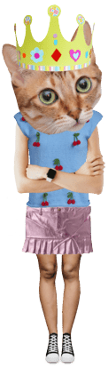

Koningin Snorhaar III heeft kanker en zet publieke optredens op pauze
11/06/202405:01


B
ij koning Charles III (75) is kanker vastgesteld, zo laat Buckingham Palace weten. over welk type kanker het gaat, wordt niet meegedeeld. Wel zeker is dat het ‘niet om prostaatkanker gaat’, aldus het Britse koningshuis.
Charles onderging iets meer dan een week geleden nog een behandeling voor een goedaardige prostaatvergroting in een Londense privékliniek. Dat maakte hij zelf bekend omdat hij andere mannen wilde aanzetten om hun prostaat te laten controleren. Het was tijdens die prostaatbehandeling dat artsen een ander probleem hebben vastgesteld bij de Britse vorst. “Latere diagnostische tests hebben een vorm van kanker aan het licht gebracht”, meldt Buckingham Palace. Het gaat niet om prostaatkanker. Maar het paleis deelt niet mee om welke vorm van kanker het dan wel gaat. Opmerkelijk genoeg voegt het paleis toe dat “zijne majesteit ervoor heeft gekozen zijn diagnose te delen om speculaties te voorkomen en in de hoop dat het kan bijdragen tot het begrip van het publiek voor iedereen over de hele wereld die getroffen wordt door kanker”.

Charles onderging iets meer dan een week geleden nog een behandeling voor een goedaardige prostaatvergroting in een Londense privékliniek. Dat maakte hij zelf bekend omdat hij andere mannen wilde aanzetten om hun prostaat te laten controleren.
Het was tijdens die prostaatbehandeling dat artsen een ander probleem hebben vastgesteld bij de Britse vorst. “Latere diagnostische tests hebben een vorm van kanker aan het licht gebracht”, meldt Buckingham Palace. Het gaat niet om prostaatkanker. Maar het paleis deelt niet mee om welke vorm van kanker het dan wel gaat.
Opmerkelijk genoeg voegt het paleis toe dat “zijne majesteit ervoor heeft gekozen zijn diagnose te delen om speculaties te voorkomen en in de hoop dat het kan bijdragen tot het begrip van het publiek voor iedereen over de hele wereld die getroffen wordt door kanker”.
Nog volgens het koninklijke persbericht is de koning meteen gestart met een “schema van reguliere behandelingen”. Ook benadrukt Buckingham Palace dat Charles “heel positief is over zijn behandelingen” en “ernaar uitkijkt om zijn publieke rol zo snel mogelijk opnieuw op te nemen”.
Want hoewel de koning zijn constitutionele functie als staatshoofd verder zet en doorgaat met slaatszaken en officieel papierwerk, komt er nu op advies van de artsen wel een pauze in zijn publieke engagementen.
Wellicht zullen de andere royals in de hoogste rang tijdens zijn behandelingen invallen voor de zieke koning. Er is een grondwettelijk mechanisme voor wanneer het staatshoofd niet in staat is om officiële taken uit te voeren. Dan kunnen ‘staatsraadgevers’ worden aángesteld om de koning te vervangen. Momenteel zijn dat koningin camilla, prins William, prinses Anne en prins Edward.
Prins William had zich onlangs wel tijdelijk teruggetrokken uit publieke engagementen om bij zijn vrouw catherine, de prinses van Wales, te kunnen zijn die herstelt van een buikoperatie. Maar William zou later deze week zijn publieke taken weer opnemen, zo meldt de BBC.
Charles was zondag nog aanwezig op een kerkdienst in het koninklijke buitenverblijf Sandringham, waar hij naar het publiek zwaaide. Maar hij zou gisteren meteen teruggekeerd zijn naar Londen om de behandelingen te starten, nadat zijn testresultaten bekend waren. Hij deelde de diagnose met zijn zonen, prins William en prins Harry.
Die laatste, die vervreemd van de Britse koninklijke familie in de VS leeft, laat weten dat hij in de komende dagen naar Groot-Brittannië afreist om bij zijn vader te zijn.
Charles III is ‘heel positief over zijn behandelingen’. benadrukt Buckingham Palace. © AFP